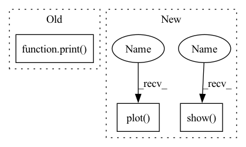

Pattern ID :33526

Before Change
train_dataloader = DataLoader(
train_data_set, batch_size=64, shuffle=True)
sample = next(iter(train_dataloader))
print(f"Feature batch shape: {sample["image"].size()}")
print(f"Labels batch shape: {sample["label"].size()}")
img = sample["image"][0].squeeze()
label = sample["label"][0]
// plt.imshow(img.numpy().astype(np.uint8), cmap="gray")
After Change
train_packet_set, batch_size=1, shuffle=True)
packet_sample = next(iter(packet_loader))
plt.plot(np.mean(np.reshape(packet_sample["image"][0].cpu().numpy(), [64, -1]), -1))
plt.show()
packet_data, packet_mean, packet_std = compute_mean_std(train_packet_set)
print("packet mean", packet_mean)
print("packet str", packet_std)
In pattern: SUPERPATTERN
Frequency: 3
Non-data size: 3
Instances
Fragment ID: 96557569
Project Name: gan-police/frequency-forensics
Commit Name: 4134e836d0bfb2595a2c0e859a068e6c6c3ad695
Time: 2021-05-07
Author: wolter@cs.uni-bonn.de
File Name: src/freqdect/data_loader.py
M Class Name: AnonimousClass
N Class Name: AnonimousClass
M Method Name: main(0)
N Method Name: main(0)
M Parent Class:
N Parent Class:
M File Name: src/freqdect/data_loader.py
N File Name: src/freqdect/data_loader.py
M Start Line: 41
M End Line: 74
N Start Line: 39
N End Line: 93
'>
Before Change
train_data_set, batch_size=64, shuffle=True)
sample = next(iter(train_dataloader))
print(f"Feature batch shape: {sample["image"].size()}")
print(f"Labels batch shape: {sample["label"].size()}")
img = sample["image"][0].squeeze()
label = sample["label"][0]
// plt.imshow(img.numpy().astype(np.uint8), cmap="gray")
// plt.savefig("test_tmp.png")
After Change
train_packet_set, batch_size=1, shuffle=True)
packet_sample = next(iter(packet_loader))
plt.plot(np.mean(np.reshape(packet_sample["image"][0].cpu().numpy(), [64, -1]), -1))
plt.show()
packet_data, packet_mean, packet_std = compute_mean_std(train_packet_set)
print("packet mean", packet_mean)
print("packet str", packet_std)
'>
Fragment ID: 96557568
Project Name: gan-police/frequency-forensics
Commit Name: 4134e836d0bfb2595a2c0e859a068e6c6c3ad695
Time: 2021-05-07
Author: wolter@cs.uni-bonn.de
File Name: src/freqdect/data_loader.py
M Class Name: AnonimousClass
N Class Name: AnonimousClass
M Method Name: main(0)
N Method Name: main(0)
M Parent Class:
N Parent Class:
M File Name: src/freqdect/data_loader.py
N File Name: src/freqdect/data_loader.py
M Start Line: 41
M End Line: 74
N Start Line: 39
N End Line: 93
'>
Before Change
mcum=mcum/nblock;
mcm2=mcm2/nblock;
err.append(np.sqrt((mcm2-mcum**2)/(nblock-1)))
print(err)
np.savetxt("block.dat",np.array(err))
def save_observalbe(filename, obs_dict):
with open(filename, "wb") as fhandle:
After Change
err.append(np.sqrt((mcm2-mcum**2)/(nblock-1)))
np.savetxt("block.dat", np.array(err))
plt.plot(np.array(err))
plt.show()
def save_observalbe(filename, obs_dict):
with open(filename, "wb") as fhandle:
'>
Fragment ID: 96557570
Project Name: nlesc-jcer/qmctorch
Commit Name: ee0dab288ad9104d886e640a22d071f1d1d61b44
Time: 2020-03-10
Author: nicolas.gm.renaud@gmail.com
File Name: deepqmc/solver/plot_data.py
M Class Name: AnonimousClass
N Class Name: AnonimousClass
M Method Name: plot_block_baby(1)
N Method Name: plot_block_baby(1)
M Parent Class:
N Parent Class:
M File Name: deepqmc/solver/plot_data.py
N File Name: deepqmc/solver/plot_data.py
M Start Line: 82
M End Line: 105
N Start Line: 96
N End Line: 125
'>
Before Change
data = Variable(data).float()
dp = self.net(data)
print(dp.shape)
param += dp
loss = qmc_loss(param,data)
self.opt.zero_grad()
After Change
pos = self.sample()
dataloader.dataset.data = pos.T
plt.plot(cumulative_loss)
plt.show()
if __name__ == "__main__":
from pyCHAMP.solver.vmc import VMC
'>
Fragment ID: 96557566
Project Name: nlesc-jcer/qmctorch
Commit Name: 81d318304529d9586b1c6e9d5407be8851a1b00f
Time: 2019-05-06
Author: nicolas.gm.renaud@gmail.com
File Name: pyCHAMP/solver/neural_net.py
M Class Name: NN
N Class Name: NN
M Method Name: train(2)
N Method Name: train(3)
M Parent Class: SOLVER_BASE
N Parent Class: SOLVER_BASE
M File Name: pyCHAMP/solver/neural_net.py
N File Name: pyCHAMP/solver/neural_net.py
M Start Line: 66
M End Line: 93
N Start Line: 58
N End Line: 87